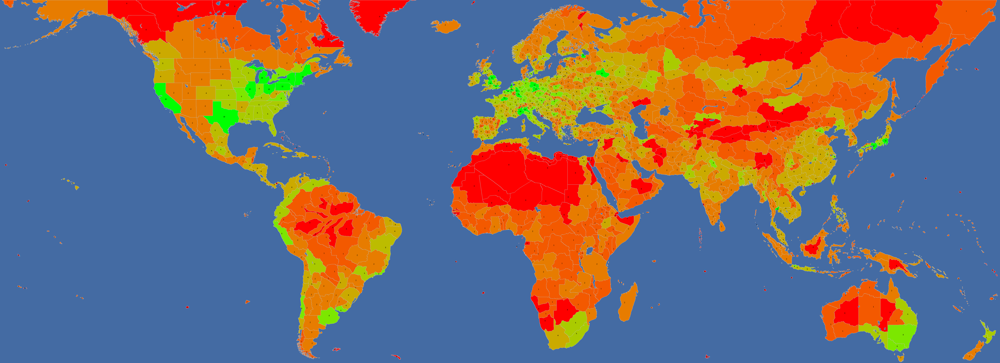
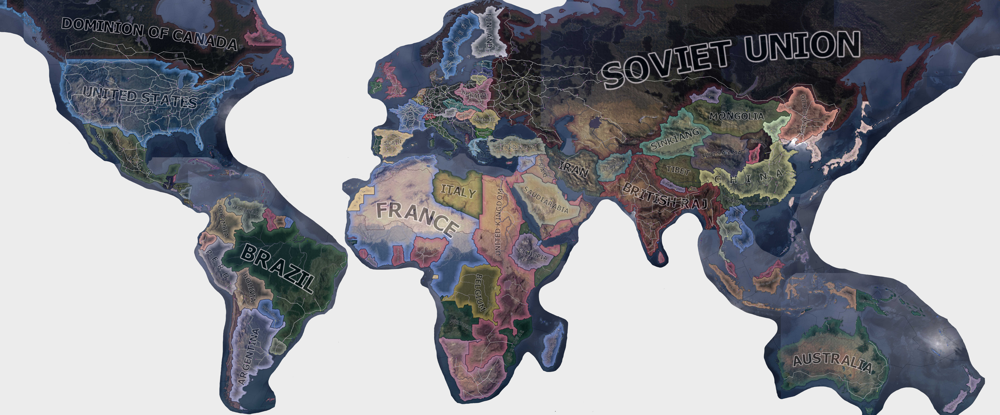
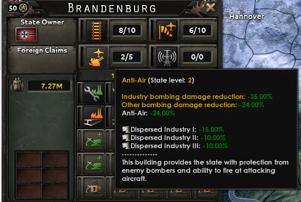

建造
原页面：Construction
州级建筑
这些建筑在州一级建造。要控制州资源或建筑，需要控制占该州胜利点至少 50% 的省份，即使这些省份并不包含建筑图标所在的省份。空军基地会显示出来，但除非玩家同时控制空军基地所在的省份，否则无法使用。
| 图标 | 名称 | 花费[1] | 最大等级[1] | 战略轰炸伤害系数[1] | 效果（除另有说明外均为本地效果） |
|---|---|---|---|---|---|
| 基础设施 | 6000 | 5 | 100% | ||
| 空军基地 | 1250 | 10 | 50% | 驻扎并修理空军单位。每级空军基地可容纳 200[9]架飞机。 | |
| 防空 | 2500 | 5 | 10% | ||
| 雷达站 | 3375 | 1-6，取决于 雷达科技 | 50% | 探测敌军，尤其是来袭飞机。雷达还有助于探测海上敌舰，并可提升对他国的情报。 | |
| 水坝 | 20000 无法手动建造 | 1 | 0%（无法被常规战略轰炸破坏） |
与州级建筑一样，共享建筑也在州一级建造；但它们共用数量有限的槽位。这或许是最重要的一类建造项目，因为其中包含生产所必需的工厂。
这些建筑中有许多可以成为战略轰炸的目标；一旦受到哪怕 1 点伤害，该建筑第一级的效果就会立即失效。这对于只有单级的昂贵建筑尤其有效，例如要塞网络、 核反应堆和
核反应堆和 民用核反应堆。
民用核反应堆。
| 图标 | 名称 | 基础花费[1] | 最大等级[1] | 战略轰炸伤害系数[1] | 效果 |
|---|---|---|---|---|---|
| 民用工厂 | 10800 | 20 | 100% | 生产消费品与建造项目，或可用于贸易、在国际市场上采购，或创建与升级情报机构。基础产出为4[12]（每日） | |
| 军用工厂 | 7200 | 20 | 100% | 生产装备（包括武器、飞机、车辆）。基础产出为3.5[13]（每天），受 | |
| 要塞网络 | 20000 | 1 | 100% | ||
| 海军船坞 | 6400 | 20 | 100% | 生产并修理舰船。基础产出为2[14]（每日），由船坞产出修正。 | |
| 合成炼油厂 | 14500 | 3 | 100% | 生产 48-168 | |
| 燃料仓 | 5000 - 500 * 当前等级 | 3[15] | 100% | 储存 | |
| 多装药大口径火炮 | 20000 | 1[15] | 0%（无法被常规战略轰炸破坏） | ||
| 火箭基地 | 6400 | 3 | 100% | ||
| 核反应堆 | 30000 | 1 | 100% | ||
| 重水核反应堆 | 25000 | 1 | 100% | ||
| 民用核反应堆 | 35000 | 1 | 100% | ||
| 强化电网 | 12000 | 1 | 100% | 每级基础设施使州内工厂能耗降低-7.50%[1]。与 | |
| 大容量电网 | 12000 | 1 | 100% | 每级基础设施使资源获取提高+10.00%[1]。与 |
拆除
可以在州标签页中拆除共享建筑：将鼠标悬停在建筑图标上，按下图标右下角出现的X。战时每个州每 30[19]天只能拆除一座建筑。
槽位数量
每个州都有一个类别，它决定共享槽位的基础数量。各种科技会为州可拥有的槽位数提供百分比加成。各种国策可能提供额外的奖励槽位。槽位总数上限为 25。[20]

| 类别 | 默认槽位数量[21] | 源文件中的名称 | 示例州 |
|---|---|---|---|
| 特大都市区 | 12 | megalopolis | 大伦敦地区 |
| 大都市区 | 10 | metropolis | 新英格兰 |
| 密集城市区 | 8 | large_city | 南安大略 |
| 城市区 | 6 | city | 斯韦阿兰 |
| 稀疏城市区 | 5 | large_town | 内布拉斯加 |
| 发达乡村区 | 4 | town | 撒丁岛 |
| 乡村区 | 2 | rural | 马达加斯加 |
| 牧区 | 1 | pastoral | 汉志 |
| 小岛 | 1 | small_island | 硫磺岛 |
| 飞地 | 0 | enclave | 直布罗陀 |
| 微型岛屿 | 0 | tiny_island | 中途岛 |
| 荒地 | 0 | wasteland | 利比亚沙漠 |
省级建筑
这些建筑在省级建造。与州级或共享建筑不同，这些建筑由控制其所在省份的一方受益，与该州的整体控制权无关。
| 图标 | 名称 | 花费[1] | 最大等级[1] | 战略轰炸伤害系数[1] | 效果 |
|---|---|---|---|---|---|
| 海军基地 | 5000 + 1000 * 当前等级 | 10 | 100% | 停泊海军舰队，并可通过运输船队收发补给与资源。海军基地每升一级都会提高补给容量、补给吞吐量以及本地舰船修理数量[22]。拥有连通的补给枢纽或海军基地的州，其资源产出提高+20%。[23] | |
| 陆上堡垒 | 500 + 500 * 当前等级 | 3-10，取决于地形和 筑垒工程科技 | 100% | 在陆战中每级堡垒使进攻方承受-15%[24]的攻击惩罚。从多个方向进攻会削弱堡垒的效果。 | |
| 海岸堡垒 | 500 + 500 * 当前等级 | 3-10，取决于地形和 筑垒工程科技 | 100% | 在海军登陆和「横渡海峡」作战中，每级海岸堡垒使进攻方承受-15%[24]的攻击惩罚。 | |
| 铁路 | 170 + 130 * 当前等级 | 5[25] | 100% | 将补给从首都运往城市、港口或补给中心等补给来源。加快进行战略机动的师的运输速度。 | |
| 补给中心 | 20000 | 1 | 10% | 分配来自铁路的补给。拥有已连接补给中心或海军基地的州，其资源产出提高+20%。[23] | |
| 运河船闸 | 2000 无法手动建造 | 1 | 0%（无法被常规战略轰炸破坏） | 使敌方可以发动炸闸突袭 |
实验设施
与其他省级建筑不同，实验设施每州仅限一座。它们在启用期间还会消耗3[26]补给，因此游戏不允许将其放置在补给不足的地点。
| 图标 | 名称 | 花费[1] | 最大等级[1] | 战略轰炸伤害系数[1] | 效果 |
|---|---|---|---|---|---|
| 海军工程设施 | 12000 + 5000 * <控制的同类设施数量> 不受 |
1 | 0%（无法被常规战略轰炸破坏） | 可聘用一名海军工程科学家 使敌方可以发动设施打击 | |
| 核研究设施 | 15000 + 5000 * <控制的同类设施数量> 不受 |
1 | 0%（无法被常规战略轰炸破坏） | 可聘用一名核研究科学家 使敌方可以发动设施打击 | |
| 空气动力学与航空电子设施 | 12000 + 5000 * <控制的同类设施数量> 不受 |
1 | 0%（无法被常规战略轰炸破坏） | 可聘用一名空气动力学与航空电子科学家 使敌方可以发动设施打击 | |
| 陆战设施 | 12000 + 5000 * <控制的同类设施数量> 不受 |
1 | 0%（无法被常规战略轰炸破坏） | 可聘用一名陆战科学家 使敌方可以发动设施打击 |
游戏开始时的铁路
一步不退 发布前的一张地图，显示 1936 年开局的所有铁路。
发布前的一张地图，显示 1936 年开局的所有铁路。

地标
地标指现实中具有标志性的纪念建筑。地标修正只对实际拥有者生效，对占领者无效。地标不会被常规战略轰炸破坏。
| 地标 | 州 | 州 ID | 省份 ID | 拥有者（1936） | 国家修正 | 备注 | |
|---|---|---|---|---|---|---|---|
| 大本钟 | 大伦敦地区 | 126 | 6103 |
|
|||
| 救世基督像 | 里约热内卢 | 500 | 10980 |
|
|||
| 罗马斗兽场 | 拉齐奥 | 2 | 9904 |
|
|||
| 埃菲尔铁塔 | 法兰西岛 | 16 | 9523 |
|
|||
| 圣索菲亚大教堂 | 伊斯坦布尔 | 797 | 9833 |
|
|||
| 霍夫堡宫 | 下奥地利 | 4 | 11666 |
|
|||
| 克里姆林宫 | 莫斯科 | 219 | 6380 |
|
|||
| 国会大厦 | 勃兰登堡 | 64 | 6521 |
|
|||
| 萨达巴德宫 | 德黑兰 | 266 | 10837 |
|
|||
| 自由女神像 | 纽约 | 358 | 3878 |
|
|||
| 泰姬陵 | 拉贾斯坦 | 433 | 4915 |
|
|||
| 人民大厅 | 勃兰登堡 | 64 | 6521 |
|
通过 4 个国策替换国会大厦：凯旋意志、欧洲霸权、重建神圣罗马帝国或欧洲邦联。 | ||
| 紫禁城 | 北平 | 608 | 9843 |
|
|||
| 南京总统府 | 南京 | 1035 | 11913 |
|
|||
| 皇居 | 关东 | 282 | 1182 |
|
|||
| 国会议事堂 | 关东 | 282 | 1182 |
|
通过「废除治安维持法」国策替换皇居。 | ||
| 八纮一宇塔 | 南九州 | 1018 | 1020 |
|
通过 2 个国策添加：八纮一宇或一亿一心。 | ||
| 长城 | 冀察 | 1039 | 1590 |
|
长城在地图上多处作为地标出现，但地标本身不提供任何加成。加成实际上通过省份修正生效，而非地标实体。占领者也能享受这些修正。 | ||
| 冀东 | 609 | 3900 | |||||
| 宁夏 | 616 | 8127 | |||||
| 辽宁 | 716 | 11808 | |||||
| 酒泉 | 756 | 2028 | |||||
| 布拉格城堡 | 波希米亚 | 9 | 11542 |
|
|||
| 波伊尼采城堡 | 西斯洛伐克 | 70 | 3484 |
|
战略要地
战略要地可以提高某些省级和州级建筑的最大数量。
| 名称 | 效果 | 备注 |
|---|---|---|
| 天然良港 | 使 |
|
| 防御要冲 | 使 |
|
| 可防御海岸线 | 使 |
|
| 有利接近路线 | 使 |
州范围 |
民用工厂
 民用工厂对一个地区进行全部改造，是建造「建造」标签页下所列任何建筑的必要条件。所有国家开局都拥有一定数量的民用工厂，其中一定比例会用于消费品，具体取决于当前实施的经济法案与国家精神。
民用工厂对一个地区进行全部改造，是建造「建造」标签页下所列任何建筑的必要条件。所有国家开局都拥有一定数量的民用工厂，其中一定比例会用于消费品，具体取决于当前实施的经济法案与国家精神。
未用于生产消费品的民用工厂可用于贸易、完成或修复「建造」标签页中排队的建造项目、在国际市场上花费，或用于执行决议或情报机构投资。可以通过建造更多民用工厂来增加其数量，但这受限于可用共享建筑槽位的数量，即每个州中可用的槽位
消费品
根据经济法令、国家精神、政治顾问和稳定度，一定数量的民用工厂会被占用去生产消费品，无法用于建造、贸易或民用工厂的其他任何用途。该数量按工厂总数的百分比计算，其中包括 军用工厂以及通过贸易获得的工厂，但不包括
军用工厂以及通过贸易获得的工厂，但不包括 海军船坞。即使工厂受损、无法生产任何东西，也仍会被计入。消费品工厂的数量一律向下取整。
海军船坞。即使工厂受损、无法生产任何东西，也仍会被计入。消费品工厂的数量一律向下取整。
| 通用 | 国家专属 | |
|---|---|---|
| −20% | ||
| −15% |
| |
| −10% | ||
| −9% | ||
| −8% |
| |
| −7% | ||
| −6% |
| |
| −5% | 拥有 100% 稳定度 （每超过 50% 的 10% 稳定度提供−1%） |
|
| −4% | ||
| −3% |
| |
| −2% | ||
| −1% | ||
| +2% |
| |
| +3% |
| |
| +4% |
| |
| +5% | ||
| +8% |
| |
| +10% | ||
| +15% | ||
| +17.5 | ||
| +20% | ||
| +25% | ||
| +30% | ||
| +35% | ||
| +50% |
 南非凭借其国家精神可在
南非凭借其国家精神可在 全面动员获得-3%的消费品，但不会因此获得额外工厂。
全面动员获得-3%的消费品，但不会因此获得额外工厂。
- 示例
假设已启用 早期动员且没有其他修正生效，即最终消费品需求为30%。某国拥有50座
早期动员且没有其他修正生效，即最终消费品需求为30%。某国拥有50座 军用工厂、50座
军用工厂、50座 民用工厂和20座
民用工厂和20座 海军船坞。这样它就必须分配30座
海军船坞。这样它就必须分配30座 民用工厂用于生产消费品，剩余15座可自由使用。
民用工厂用于生产消费品，剩余15座可自由使用。
消费品工厂系数
消费品工厂系数（CGFF）是某些国家（最著名的是德国）可用的一项额外系数。它是相对于当前消费品工厂的额外消费品百分比。该数值是相乘而非相加的。
以下是关于CGFF的公式：
消费品总量=经济法案赋予的消费品·（1+CGFF）
假设某国采用 早期动员，即消费品需求为30%，且拥有+10% CGFF。其最终消费品需求为30% x (1+10%) = 33%，而不是40%。这意味着如果它共有100座工厂，将有33座民用工厂被分配去生产消费品。
早期动员，即消费品需求为30%，且拥有+10% CGFF。其最终消费品需求为30% x (1+10%) = 33%，而不是40%。这意味着如果它共有100座工厂，将有33座民用工厂被分配去生产消费品。
某些情况下CGFF会变成负值。与正CGFF的情形类似，这将以乘法方式降低当前的消费品需求。如果上述示例国家采用的是 早期动员但拥有-10% CGFF，其最终消费品需求将是30% x (1-10%) = 27%，而不是20%。
早期动员但拥有-10% CGFF，其最终消费品需求将是30% x (1-10%) = 27%，而不是20%。
多个CGFF来源之间以乘法叠加。这意味着多个较小的正CGFF来源可能比单个较大的正CGFF来源效果更好。反之，单个较大的负CGFF来源会比多个较小的负CGFF来源效果更强。
产出
每座投入建造的民用工厂每天产出4[12]。建造速度会修正所有建造项目的产出。
| 通用 | 特定国家 | |
|---|---|---|
| +15% | ||
| +10% |
|
|
| +5% | ||
| −10% | ||
| −30% | ||
| −40% |
还有一些修正只影响单一类型的建筑。它们主要是政治顾问（工业领袖、筑垒工程师、军需总长与战争工业家），但也可能是国家精神中由国策或事件激活的众多项目之一。
增建民用工厂的效率
增建一座民用工厂的投资回报取决于建造速度加成以及当前（或预期将来）实施的经济法案。建造速度加成越高，新建民用工厂的产出就越多，也越快积累到等于其成本的产出，即 10800。这个变量就是以天数计的回本时间，也就是收回建厂成本所需的时间。
一个国家的经济法令除了有时会影响民用工厂的建造速度外，还决定了民用工厂用于满足消费品需求与用于自由产出、贸易等的比例。该比例越高，新建民用工厂的回本时间就越长，因为新建的民用工厂更有可能被分配去生产消费品，而不是产生有用的产出。新建民用工厂的回本时间由以下公式给出：
: Payback Time = \frac10800Infrastructure Modifier ·5 · (1 + Construction Speed Bonus) · (1 - (Consumer Goods Factories)/(100))
建造速度修正的范围介于-70%到+65%之间。除最低的两档修正外，它们都有多种组合可以实现。事实上，除国家精神和独特法令之外，影响民用工厂建造速度的变量共有320种可能组合。基础设施加成从零基础设施时的1x到满基础设施时的2x[7]不等。
对于一个拥有4级基础设施、即基础设施建造速度修正为1.8x的典型州，可以列出以下回本时间表。
| 经济法令 | 建造速度 | ||
|---|---|---|---|
| 最小值（-70%） | 0% | 最大值（+65%） | |
| 4444 | 1333 | 1159 | |
| 3077 | 1231 | 985 | |
| 2286 | 1143 | 847 | |
| 1524 | 1067 | 688 | |
| 1250 | 1000 | 606 | |
| 1232 | 942 | 571 | |
| 1111 | 889 | 539 | |
最低建造速度在「不受干扰的孤立」下为-70%，采用「部分动员」时升至-20%。最高速度在「不受干扰的孤立」下为+15%，采用「部分动员」时为+65%。所有数值均向上取整为整天。
为在目标时间前拥有最多装备，从建造民用工厂转为建造军用工厂的理想时间由以下公式给出：
：切换时间 = 目标时间 - (2)/(ln(2)) · 回本时间
例如，若回本时间为800、目标时间为1944年1月，则应在1937年9月从建造民用工厂转为建造军用工厂。
此外，由于最多可指派15座民用工厂（若有可用）参与建造一座新的民用工厂，建造一座新厂所需的天数由以下公式给出：
: Build Time = \frac10800\#Factories · 5 · Infrastructure Modifier · (1 + (SpeedBonus)/(100))
基础设施等级
所有建筑的建造速度取决于该州的基础设施等级。建造速度乘以
- : 1 + \bigg( State infrastructure · (Max Infrastructure Construction Cost Effect)/(State Infrastructure Max Level) \bigg)
其中/Hearts of Iron IV/common/defines/00_defines.lua中的INFRA_MAX_CONSTRUCTION_COST_EFFECT默认为1，[7]最大基础设施等级在/Hearts of Iron IV/common/buildings/00_buildings.txt中默认为5。
例如，某州基础设施为3/5时，该州的建造速度乘以1.6x。在建造界面中，该加成会以带颜色的百分比显示在每个州的基础设施道路图标旁。该加成在科技、顾问和国家精神加成之后生效，因此1级基础设施的加成比「军工实业家」之类的更强。
通常建议先为国家安排一个基础设施／民用工厂建造阶段，然后再通过建造军用工厂和海军船坞实现军事化。不过，如果计划或预期会提前开战，以及／或者新建的船坞打算用于生产生产时间极长的舰船，那么民用工厂的建造规模就可以大幅缩减。
由于基础设施带来的建造加成，最高效的做法是逐个州填满所有建筑槽位。为此可以优先选择初始基础设施等级较高的州。游戏机制鼓励玩家把工业集中在基础设施完善的中心地区，但也必须权衡将所有工业集中于一处的脆弱性。通常情况下，所有建筑槽位会在游戏结束前被填满，这代表着相应领土在游戏内的工厂上限。
| 最优基础设施等级 | 任何建筑的最低建造成本（E/%） | 以军用工厂计的成本 | 以民用工厂计的成本（G） |
|---|---|---|---|
| 1 | 36000 | 5 | 3.333 |
| 2 | 42000 | 5.833 | 3.889 |
| 3 | 48000 | 6.667 | 4.444 |
| 4 | 54000 | 7.5 | 5 |
| 5 | 60000 | 8.333 | 5.556 |
用于判断基础设施是否值得建造的建造成本值还会进一步受建造速度修正。
：修正后的建造成本 = 所需建造成本 · 建造速度修正
| 建造速度 | 建造速度修正 |
|---|---|
| -30% | 0.7 |
| -20% | 0.8 |
| -10% | 0.9 |
| 0% | 1 |
| +10% | 1.1 |
| +20% | 1.2 |
| +30% | 1.3 |
更高的建造速度总是有利的，但同时也会使基础设施的建造加成变得不那么划算。
建造基础设施也可以提高资源的总量。每级基础设施会使该州所有开采资源的总量增加+15%[6]；这不包括 合成炼油厂生产的资源。基础设施共有五（5）级；全部建满将使开采资源总量获得+75%加成。
合成炼油厂生产的资源。基础设施共有五（5）级；全部建满将使开采资源总量获得+75%加成。
基础设施等级还会影响陆军单位的组织度恢复速率，如下表所示：
| 基础设施等级 | 5 | 4 | 3 | 2 | 1 |
|---|---|---|---|---|---|
| 组织度恢复速率 | +25% | +15% | +5% | -5% | -15% |
当某州的基础设施达到满级（5级）后，可通过名为「全州产业整合」的决议为该州增加一个建筑槽位，该决议需要100 PP。此决议每个州只能执行一次。
工厂转产
 民用工厂可以转换为
民用工厂可以转换为 军用工厂，基础成本 4000[1]；
军用工厂，基础成本 4000[1]； 军用工厂可以转换为
军用工厂可以转换为 民用工厂，基础成本 9000。[1]基础成本受经济法案修正，还可进一步由国家精神和政治顾问修正。要转换工厂，只需点击相应的州，然后将鼠标悬停在要转换的工厂上。或者，使用建造标签页中的转换按钮，转换项目会像其他建筑项目一样出现在该标签页中。
民用工厂，基础成本 9000。[1]基础成本受经济法案修正，还可进一步由国家精神和政治顾问修正。要转换工厂，只需点击相应的州，然后将鼠标悬停在要转换的工厂上。或者，使用建造标签页中的转换按钮，转换项目会像其他建筑项目一样出现在该标签页中。
损坏与修复
每级建筑拥有 100[27] HP。它们可能因港口打击（海军基地）、陆战（基础设施、要塞）、抵抗（工厂）、战略轰炸或明确的事件（例如苏联将工厂迁往乌拉尔的决定）而受损。核弹可以一次摧毁一座建筑的多级甚至全部等级，详见核弹效果。
陆上战斗（针对基础设施）和战略轰炸造成的损坏，会按建筑的受损系数（空军基地和雷达：0.5，防空：0.1，其他为1）以及当前未受损建筑等级与最高等级之比的平方进行缩放。例如，一座3级防空建筑（最高5级）在已有1级部分受损时，只承受战略轰炸来袭伤害的: (2/5)^2 · 0.1 = 1.6\%。
一个州内的单座军用工厂（换言之，1级军用工厂）承受: (1/20)^2 = 0.25\%，而15座军用工厂承受: (15/20)^2 = 56.25\%。在这两种伤害来源下，高级工厂和基础设施的受损速度通常比低等级快得多。

防空会根据所在州的防空等级和已研究的防空科技，提供对轰炸机类攻击（港口打击和战略轰炸）的抗损能力。「分散工业」提供另一种抗损来源，但仅对工厂有效，且不与防空叠加。工厂取两者中的最大值。
所有受损建筑都会出现在建造列表中。分配给修复线的工厂速度会获得+200%[28]的加成，外加任何工厂修复速度加成（例如来自 建造科技或
建造科技或 「建造修复」持续焦点、基础设施等级）。即使没有分配工厂，该线的速度也是1[29][30]。
「建造修复」持续焦点、基础设施等级）。即使没有分配工厂，该线的速度也是1[29][30]。
由此得到的每日修复进度为: median(1\%, speed / building cost · 100\%, 100\%)，四舍五入到最接近的整数百分比。因此即使没有分配工厂，修复每天仍会推进1%。给造价高昂的建筑只分配少量工厂，也可能每天只推进1%，实际上浪费了这些工厂的产出。
注释与参考
^ a: 德国可在完成「工业扩张」后将该建筑的产量提高 1，或在完成「建立布纳工厂」后提高2。^
1，或在完成「建立布纳工厂」后提高2。^ b: 英属印度
b: 英属印度 可在任命威廉·罗兹·戴维斯为政治顾问后将该建筑的产量提高1。
可在任命威廉·罗兹·戴维斯为政治顾问后将该建筑的产量提高1。
- ↑ 1.00 1.01 1.02 1.03 1.04 1.05 1.06 1.07 1.08 1.09 1.10 1.11 1.12 1.13 1.14 1.15 1.16 1.17 1.18 1.19 1.20 1.21 1.22 1.23 1.24 1.25 1.26 1.27 1.28 来自游戏文件 \Hearts of Iron IV\common\buildings\00_buildings.txt
- ↑
NDefines.NSupply.INFRA_TO_SUPPLY = 0.3中的 定义文件。 - ↑
NDefines.NMilitary.INFRASTRUCTURE_MOVEMENT_SPEED_IMPACT = -0.05中的 定义文件。 - ↑
NDefines.NMilitary.INFRA_ORG_IMPACT = 0.5中的 定义文件。 - ↑
NDefines.NMilitary.STRATEGIC_SPEED_INFRA_BASE = 5和NDefines.NMilitary.STRATEGIC_SPEED_INFRA_MAX = 10，见定义文件。 - ↑ 6.0 6.1
NDefines.NBuildings.INFRASTRUCTURE_RESOURCE_BONUS = 0.15中的 定义文件。 - ↑ 7.0 7.1 7.2
NDefines.NProduction.INFRA_MAX_CONSTRUCTION_COST_EFFECT = 1中的 定义文件。 - ↑
NDefines.NBuildings.INFRASTRUCTURE_MUD_EFFECT = -0.8中的 定义文件。 - ↑
NDefines.NBuildings.AIRBASE_CAPACITY_MULT = 200中的 定义文件。 - ↑
NDefines.NAir.AA_INDUSTRY_AIR_DAMAGE_FACTOR = -0.12中的 定义文件。 - ↑
NDefines.NBuildings.ANTI_AIR_SUPERIORITY_MULT = 5中的 定义文件。 - ↑ 12.0 12.1
NDefines.NProduction.BASE_FACTORY_SPEED = 4中的 定义文件 - ↑
NDefines.NProduction.BASE_FACTORY_SPEED_MIL = 3.5中的 定义文件。 - ↑
NDefines.NProduction.BASE_FACTORY_SPEED_NAV = 2中的 定义文件。 - ↑ 15.0 15.1 来自游戏文件 \Hearts of Iron IV\common\technologies\industry.txt
- ↑ 16.0 16.1
NDefines.NRaids.NUCLEAR_BOMB_PRODUCTION_SCALE = 2555，位于定义文件，除以 3 - ↑ 17.0 17.1 17.2
NDefines.NRaids.NUCLEAR_BOMB_PRODUCTION_SCALE = 2555，位于定义文件，除以 2 - ↑
NDefines.NRaids.NUCLEAR_BOMB_PRODUCTION_SCALE = 2555中的 定义文件。 - ↑
NDefines.NBuildings.DESTRUCTION_COOLDOWN_IN_WAR = 30中的 定义文件。 - ↑
NDefines.NBuildings.MAX_SHARED_SLOTS = 25中的 定义文件。 - ↑ 来自文件夹 \Hearts of Iron IV\common\state_category 中的游戏文件
- ↑ 本地舰船维修限制forum:1119095
- ↑ 23.0 23.1
NDefines.NBuildings.SUPPLY_ROUTE_RESOURCE_BONUS = 0.2中的 定义文件 - ↑ 24.0 24.1
NDefines.NMilitary.BASE_FORT_PENALTY = -0.15中的 定义文件 - ↑
NDefines.NSupply.MAX_RAILWAY_LEVEL = 5中的 定义文件。 - ↑
NDefines.NProject.NEEDED_SUPPLY_FOR_FULL_SPEED_PROJECT = 3中的 定义文件。 - ↑ 已通过使用控制台指令「building_health」的游戏内测试确认。
- ↑
NDefines.NBuildings.BASE_FACTORY_REPAIR_FACTOR = 2中的 定义文件。 - ↑
NDefines.NBuildings.BASE_FACTORY_REPAIR = 1中的 定义文件。 - ↑ 「建造修复」持续焦点不会提升该数值forum:1251943
| 政治 | 意识形态 • 阵营 • 国策 • 理念 • 政府 • 傀儡国 • 流亡政府 • 外交 • 世界紧张度 • 内战 • 占领 • 力量均势 |
| 生产 | 贸易 • 生产 • 建造 • 装备 • 燃料 • 军工组织 • 国际市场 |
| 科研与科技 | 科研 • 步兵科技 • 支援连科技 • 装甲科技（也包括 未拥有绝不后退）• 火炮科技 • 陆军学说 • 特种部队学说 • 海军科技（也包括 未拥有全民持枪）• Naval support科技 • 海军学说 • 空军科技（也包括 未拥有以血盟誓）• 空军学说 • Engineering科技 • Industry科技 • 特殊项目 • 科学家 |
| 军事与战争 | 战争 • 和平会议 • 陆军单位 • 陆战 • 师编制设计 • 坦克设计 • 陆军编制器 • 集团军 • 指挥官 • 作战计划 • 战斗战术 • 舰船 • 舰船设计（伦敦海军条约）• 海战 • 飞机设计 • 空战 • 经验 • 军官团 • 损耗与事故 • 后勤 • 人力 • 核弹 • 突袭 |
| 间谍活动 | 情报 • 情报机构 • 特工 • 任务 • 行动 |
| 地图 | 地图 • 省份 • 地形 • 天气 • 州 |
| 事件与决议 | 事件 • 决议 |